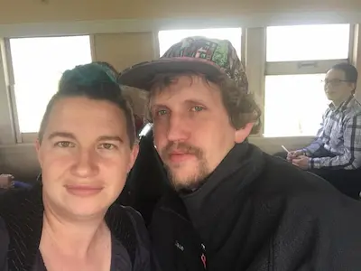

Getting to the Root of Me

About Me
Hi, I’m Joyce Keil, a lifelong gardener and nature enthusiast. I believe that gardening is not just about growing plants, but also about nurturing the soul. My journey in gardening has taught me patience, resilience, and the joy of watching life flourish.
Skills
- 🌼 Lifelong gardener with extensive knowledge of plants, soil, and growing conditions
- 📚 Quick and enthusiastic learner—I enjoy figuring things out and picking up new skills
- 🔧 Natural problem solver—I can fix almost anything with a little creativity
- 🖋️ Published poet with a love for language and expression
- 🐴 Experienced equestrian—I ride regularly and care for horses and donkeys
Fun Facts
- 👨👩👧👦 I’m one of 10 siblings and have 6 children of my own
- 💍 Married for 18 years and counting
- 🐎 I share my life with 3 horses, 3 donkeys, and a pony
- 🏡 I built my own home—yes, with my own two hands!
- 💚 My dream is to turn my yard into a backyard paradise filled with plants, animals, and laughter